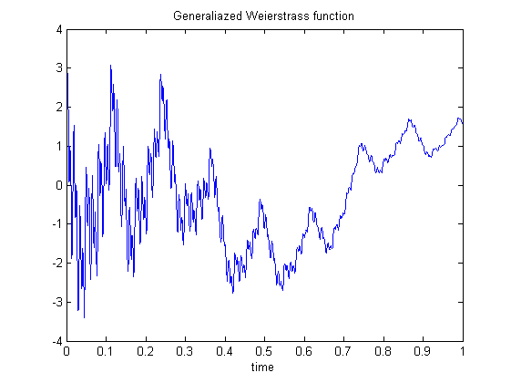
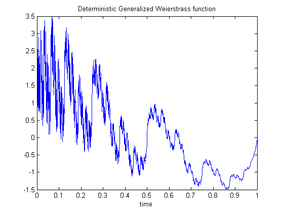
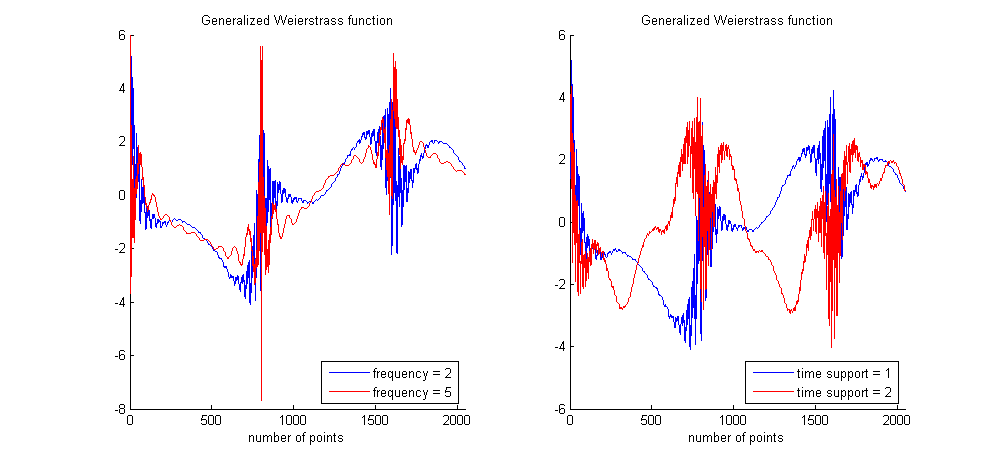

| FRACLAB Functions |
|
Generates a Generalized Weierstrass function
WEI = genegwei(N,H)
WEI = genegwei(...,'Method')
WEI = genegwei(...,'Propertyname',Propertyvalue)
WEI = genegwei(N,H) Generates the generalized Weierstrass function, WEI, using a sample size, N, and a Holder function H. The parameter N is a positive integer and each element of the function H, which is in (0,1), prescribes the local Holder regularity of the function WEI.
WEI = genegwei(...,'Method') Generates the generalized Weierstrass function, WEI, using a specific method. The supported Methods can be choosen from the list below :
| Specifier | Method Type |
|---|---|
| 'stoc' | Stochastic (default) |
| 'det' | Deterministic |
H = genegwei(...,'Propertyname',Propertyvalue) Generates the generalized Weierstrass function, WEI, applying the specified property settings. The property setting can be choosen from the list below :
| Property | Purpose |
|---|---|
| 'support' |
The WEI is computed using a specific size of time support, TMAX. The parameter TMAX
is a positive integer. |
| 'frequency' |
The WEI is computed using a specific multiplicative frequency ratio, L. The parameter L is a positive
real superior to 1. |
| 'nterms' |
The WEI is computed using a specific number of terms in the sum, K. The parameter K
is a positive integer. |
| 'seed' |
The WEI is computed with a specific random seed, SEED. This is useful to generate the same path several times
or to compare the paths of different WEIs. |
N = 1024; t = linspace(0,1,N); Ht = eval('0.1+0.8*t');
x = genegwei(N,Ht);
figure; plot(t,x)
title('Generaliazed Weierstrass function'); xlabel('time');

N = 2048; t = linspace(0,1,N); Ht = eval('0.1+0.8*t');
x = genegwei(N,Ht,'det');
figure; plot(t,x);
title('Deterministic Generalized Weierstrass function'); xlabel('time');

N = 2048; t = linspace(0,1,N); Ht = eval('abs(sin(8*t))');
L1 = 5; T1 = 2;
x1 = genegwei(N,Ht,'seed',10);
x2 = genegwei(N,Ht,'frequency',L1,'seed',10);
x3 = genegwei(N,Ht,'support',T1,'seed',10);
figure; subplot(1,2,1); hold on; plot(x1); plot(x2,'r');
legend('frequency = 2','frequency = 5','Location','SouthEast');
title('Generalized Weierstrass function');
xlabel('number of points'); xlim([0 N]);
subplot(1,2,2); hold on; plot(x1); plot(x3,'r');
legend('time support = 1','time support = 2','Location','SouthEast');
title('Generalized Weierstrass function');
xlabel('number of points'); xlim([0 N]);

| |
genewei | ifsfif | |